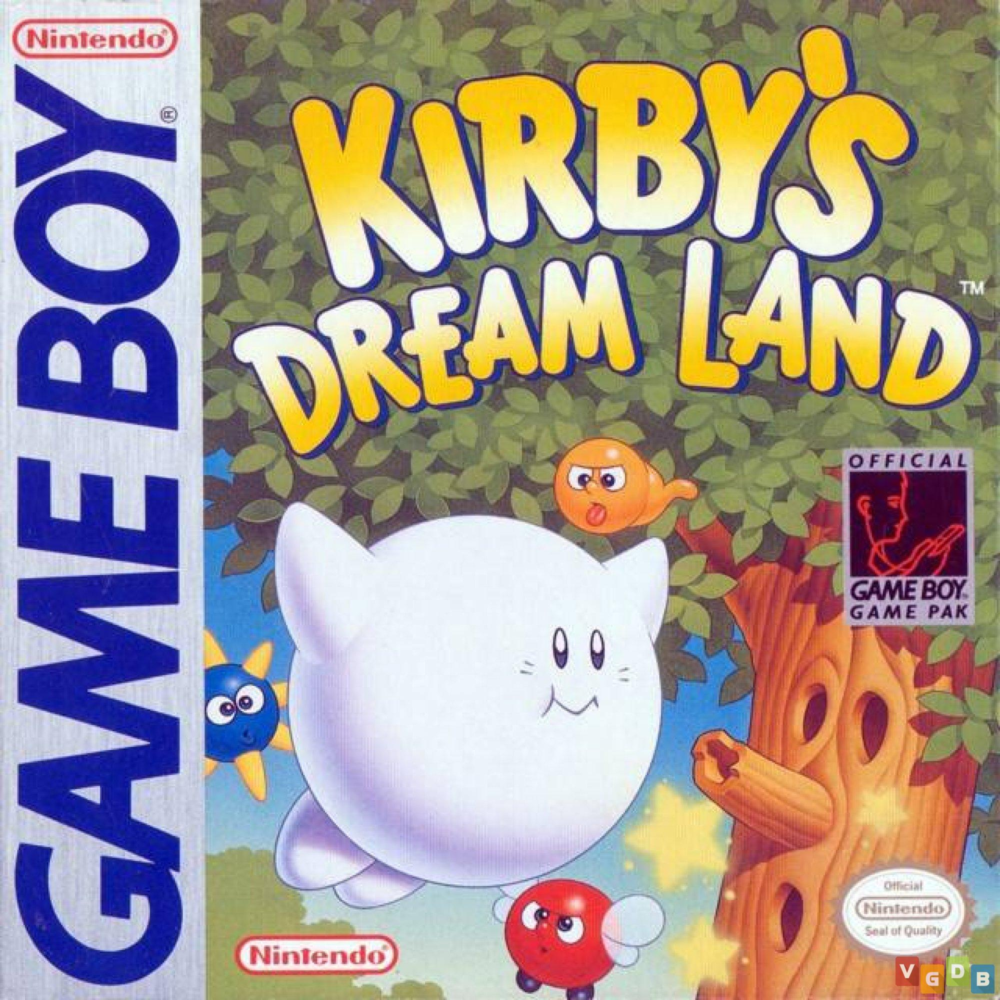

GAME BOY
O GameBoy é um videogame portátil produzido pela Nintendo lançado em 1989, concebido pelo lendário criador de brinquedos japoneses Gunpei Yokoi.
Ele foi uma verdadeira revolução comparado com o antecessor, o GameWatch, que não podia trocar os jogos exigindo que o consumidor sempre comprasse um aparelho novo para ter novas experiências, já o GameBoy fazia o uso de cartuchos como mídia, permitindo que com um simples "swap" dos cartuchos novos jogos pudessem ser jogados, trazendo horas de diversão para seus jogadores.
MODELOS
Em 1996 foi lançado o "Game Boy Pocket", com acabamentos prateados metalizados, 30% menor que o Game Boy normal e display monocromático mais nítido. Funcionava com duas pilhas AAA, o que lhe possibilitava caber na palma da mão, mantendo o mesmo tamanho do display, porém com mais brilho e nitidez.
Em 1997 foi lançado o Game Boy Light, alguns milímetros maior do que o Game Boy Pocket, só que com uma extra - luz interna, o que lhe permitia ser jogado no escuro, e também perdeu o fundo esverdeado, que cansava bastante a vista. Este modelo é bastante raro, pois só foi lançado no Japão.

Em 1998 foi lançado o Game Boy Color, já com um display colorido e capaz de reproduzir os jogos antigos de seus antecessores. A nova tecnologia trouxe um display de LCD com baixo consumo de energia e transmissão de dados por infra-vermelho, porém apenas com alguns jogos compatíveis. Aproveitando o sucesso da série Pokémon, a Nintendo produziu uma versão especial do console com um Pikachu e um Pichu estampados, chamado de Game Boy Color: Pikachu Edition.
JOGOS
O GameBoy possui uma biblioteca com centenas de jogos, alguns extremamente populares como
Mario e Tetris (jogo que vinha com o aparelho), porém foi um titulo completamente novo que
marcou o aparelho: Pokemon!
A franquia Pokemon nasceu no GameBoy lançada em 1996, 7 anos após o lançamanto original do aparelho
trouxe uma sobrevida para o mesmo, além de vender incriveis 46 milhões de cópias ao redor do mundo
se tornando o jogo mais vendido do aparelho
JOGOS MAIS VENDIDOS
| Nome | Desenvolvedor | Lançamento | Vendas | Capa | |
|---|---|---|---|---|---|
| 1 | Pokémon Red / Green / Blue / Yellow | Game Freak | 27 de Fevereiro de 1996 | 46 milhões | |
| 2 | Tetris | Nintendo | 14 de Junho de 1989 | 35 milhões | |
| 3 | Pokémon Gold / Silver / Crystal | Game Freak | 21 de Novembro de 1999 | 29 milhões | |
| 4 | Super Mario Land | Nintendo | 21 de Abril de 1989 | 18 milhões | |
| 5 | Super Mario Land 2: 6 Golden Coins | Nintendo | 21 de Outubro de 1992 | 11 milhões | |
| 6 | Dr. Mario | Nintendo | 27 de Julho de 1990 | 5,34 milhões | |
| 7 | Pokémon Pinball | Jupiter | 14 de Abril de 1999 | 5,31 milhões | |
| 8 | Wario Land: Super Mario Land 3 | Nintendo | 21 de Janeiro de 1994 | 5,19 milhões | |
| 9 | Kirby's Dream Land | HAL Laboratory | 27 de Abril de 1992 | 5,130 milhões |  |
| 10 | Super Mario Bros. Deluxe | Nintendo | 1 de Maio de 1999 | 5,07 milhões |
HARDWARE
| GameBoy Original | GameBoy Pocket | GameBoy Light | GameBoy Color | |
|---|---|---|---|---|
| Tamanho | 90mm × 148mm × 32mm | 78mm x 128mm x 25mm | 80mm x 130mm x 28mm | 78mm x 133mm x 27mm |
| Peso | 200g (Sem pilhas) | 125g (Sem pilhas) | 125g (Sem pilhas) | 138g (Sem pilhas) |
| Tela | LCD P&B - 160 × 144 pixels | LCD P&B - 160 × 144 pixels | LCD P&B - 160 × 144 pixels | TFT Colorida - 160 × 144 pixels |
| Tela Iluminada | Não | Não | Sim | Não |
| Bateria | 4 x Pilhas AA | 2 x Pilhas AA | 2 x Pilhas AA | 2 x Pilhas AA |
| Duração | Até 30 horas | Até 10 horas | Até 12 horas | Até 10 horas |
| CPU | Custom 8-bit Sharp LR35902 (4.19 MHz) | Custom 8-bit Sharp LR35902 (4.19 MHz) | Custom 8-bit Sharp LR35902 (4.19 MHz) | Custom 8-bit Sharp LR35902 (8.38 MHz) |
| Memoria | RAM: 8 Kbytes | RAM: 8 Kbytes | RAM: 8 Kbytes | RAM: 32 Kbytes |